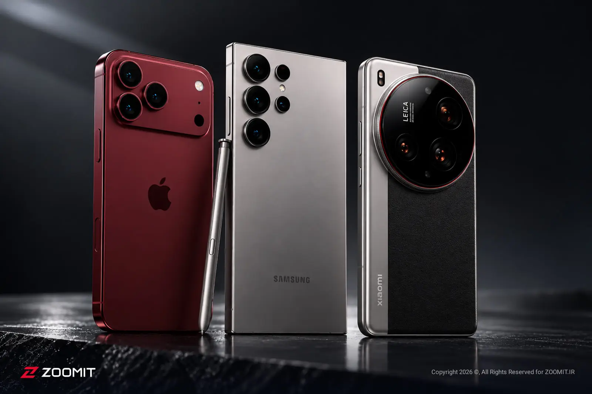

نسل جدید گوشیهای هوشمند

گوشیهای هوشمند در مسیر تحولی تازه
گوشیهای هوشمند با سرعت زیادی در حال پیشرفت هستند و هر نسل امکانات تازهای را در اختیار کاربران قرار میدهد.
یکی از مهمترین تغییرات این محصولات، استفاده گستردهتر از هوش مصنوعی برای انجام کارهای روزمره است.
دوربینهای پیشرفتهتر میتوانند تصاویر باکیفیتتری ثبت کنند و قابلیتهای ویرایش عکس را بهبود دهند.
نمایشگرهای روشنتر و روانتر نیز تجربه تماشای فیلم، بازی و مطالعه را بهتر میکنند.
برخی شرکتها همچنان روی گوشیهای تاشو کار میکنند تا نمایشگر بزرگتری را در فضای کوچکتر ارائه دهند.
افزایش قدرت پردازندهها باعث میشود اجرای برنامهها و بازیهای سنگین سریعتر و روانتر انجام شود.
عمر باتری و سرعت شارژ نیز از بخشهایی هستند که سازندگان برای بهبود آنها تلاش میکنند.
در کنار این امکانات، امنیت اطلاعات شخصی و محافظت از حریم خصوصی اهمیت بیشتری پیدا کرده است.
با این حال، افزایش قابلیتها میتواند هزینه ساخت و قیمت نهایی بعضی از گوشیها را بالا ببرد.
در نهایت، انتخاب یک گوشی مناسب به نیاز کاربر، بودجه و امکاناتی بستگی دارد که بیشترین استفاده را از آنها میکند.
نظرات شما